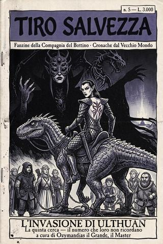

Tiro Salvezza · numero V
L'invasione di Ulthuan
Numero cinque della fanzine della Compagnia del Bottino: il portale li ha portati a Nagarythe, la terra degli elfi oscuri, dove due di loro erano nati. Un'amica passa al nemico, tre nani tornano rifatti da una forgia crudele, e alla fine gli alti elfi cancellano a tutti la memoria. Il numero che i suoi protagonisti non ricordano.
- ≈ 24 min di lettura
- Ozymandias il Grande
- dalle partite a D&D 5ª ed.
- anche in EPUB, 2,7 MB
Editoriale — numero cinque
TIRO SALVEZZA — fanzine della Compagnia del Bottino · rubrica «Cronache dal Vecchio Mondo»
Questo è il numero più strano che vi abbia mai messo tra le mani, e devo dirvi subito perché: è il numero che i suoi protagonisti non ricordano.
Nel numero scorso una porta li aveva portati nel posto sbagliato. Ora posso dirvi qual era: Nagarythe, la contrada maledetta degli elfi oscuri — e la casa, senza che nemmeno loro lo sapessero, di due della compagnia. Ciò che vi accadde è la storia più cupa che io abbia arbitrato: un’amica che passa al nemico e ci resta, tre nani rifatti da una forgia crudele e rispediti a casa come armi inconsapevoli, un compagno da cui, invece di un drago, nasce un drago. E in fondo a tutto, gli alti elfi che, per non farsi sfuggire notizie, prendono la Compagnia del Bottino e le cancellano ogni ricordo di ciò che ha vissuto.
Sono tornati a casa festeggiati, con le tasche piene e la mente pulita. Se domani chiedeste loro di Nagarythe, di Ardal, della forgia di Hotek, vi guarderebbero senza capire. Per loro non è successo. È successo solo a me — e ora, in queste pagine, anche a voi. Perché qualcuno, da qualche parte, deve pur tenere il conto delle cose che tutti hanno dimenticato. È il motivo per cui questa fanzine esiste.
Si ride ancora, dove si può: c’è un nano nudo che usa la barba come cuscino, due bardi che evocano una banda paesana in mezzo a un agguato, un elfo col martello che gioca a golf con la testa dei nemici. La Compagnia del Bottino resta sé stessa fino all’inferno e ritorno. Ma è il numero in cui ho smesso, per la prima volta, di ridere insieme a loro. E in cui ho capito che il mio registro non è una collezione: è una promessa. Che non dimenticherò, al posto loro.
Qui i log si fermano. La campagna no. Ci ritroveremo, appena ci sarà una nuova pagina da tradire.
— Ozymandias il Grande, il Master
Sommario
- L’invasione di Ulthuan (5ª cerca) — Non Ulthuan, ma Nagarythe: la terra degli elfi oscuri, dove due della compagnia sono nati. Tombe maledette, corsari delle Arche nere, la forgia di Hotek di Vaul, il tradimento di un’amica, e un ritorno a casa che gli alti elfi si premurano di far dimenticare a tutti. Il numero che i suoi protagonisti non ricordano. (Fine, per ora, della fanzine.)
Linea temporale
Dove siamo nella campagna della Compagnia del Bottino. In grassetto ciò che leggerete in questo numero.
- 1ª e 2ª cerca — I pirati del Talabec (n. 1)
- 3ª cerca — La torre di ossa + Il principe delle sabbie — Sylvania (n. 2 e 3)
- 4ª cerca — La diplomazia elfica — verso Ulthuan (n. 4)
- 5ª cerca — L’invasione di Ulthuan — Nagarythe, la terra degli elfi oscuri. (muoiono: elladyn e Julietok — registro da otto a dieci; Ardal passa ai druchii; i nani Balderk, Vistra e Nico tornano mutilati da Hotek; la memoria di tutti viene cancellata.)
Fili aperti a fine campagna (finora): Ardal è ora una necrostrega druchii nemica; i tre nani sono agenti-dormienti inconsapevoli di Hotek/Malekith; l’invasione di Irae T’Sarran incombe su Ulthuan; Manfred Von Carstein cammina di nuovo nel mondo (solo Ridley lo sa); restano i doni di Tzeentch, i marchi di Ramotis, il museo delle cere di Marienburg, e il rito del piromante. Qui i log si fermano. La campagna, no.
L’invasione di Ulthuan
Cronaca della quinta cerca della Compagnia del Bottino. La terra sbagliata, l’amica perduta, e il numero che i miei giocatori non ricordano. A cura di Ozymandias il Grande, il Master.
Nagarythe, la contrada maledetta degli elfi oscuri. Dove due di loro erano nati, e nessuno se lo ricorda.
Prologo — Il numero che loro non ricordano
Devo aprire questo numero con una confessione, e con un privilegio triste che spetta soltanto a me. La confessione è che ciò che sto per raccontarvi, i suoi protagonisti non lo ricordano. Non per modestia, non per rimozione: per magia. Alla fine di questa cerca gli alti elfi di Ulthuan hanno preso la Compagnia del Bottino, uno per uno, e le hanno cancellato dalla mente ogni cosa — la terra maledetta, i corsari, la forgia, il tradimento, tutto. Sono tornati a casa festeggiati come eroi di un’impresa di cui non conservano un solo ricordo. Il privilegio, quello triste, è che io invece ricordo, perché io tengo i registri, e i registri non si cancellano con un rituale. Questo è, letteralmente, il numero che i miei stessi giocatori non potrebbero leggere e riconoscere. È capitato a loro. Ma è rimasto solo a me.
Vi ho promesso, in fondo all’ultimo numero, che i morti avrebbero ripreso a contarsi. Mantengo, come sempre, e stavolta vorrei non doverlo fare. Perché il conto di questa cerca non è fatto solo di morti. È fatto di un’amica che passa dall’altra parte e ci resta; di tre nani che tornano a casa con addosso cose che non c’erano prima e senza sapere chi gliele abbia messe; di un compagno da cui, invece di un drago, nasce un drago. E in fondo a tutto, di una compagnia che ha attraversato l’inferno e ne è uscita con la mente pulita come un registro nuovo — mentre il mio, di registro, si sporcava per tutti loro.
Ridete anche stavolta, dove potete, ché di occasioni ce ne sono: c’è un nano nudo che usa la barba come cuscino, ci sono due bardi che evocano una banda paesana in mezzo a un agguato, c’è un elfo col martello che gioca a golf con la testa dei nemici. La Compagnia del Bottino resta sé stessa fino in fondo, anche in capo al mondo, anche all’inferno. Ma tenete un occhio sull’amica che non torna. Perché di tutte le cose che ho contato in questa campagna, quella è la sola che, ancora oggi, non so in quale colonna mettere.
Capitolo primo — Le stelle sbagliate
Vi avevo lasciati su una spiaggia sotto stelle che non erano al loro posto, con il mare dalla parte sbagliata. Ora posso dirvi dove il portale li aveva portati: non a Ulthuan, o non alla Ulthuan dei bianchi porti e degli elfi profumati, ma a Nagarythe, la contrada settentrionale e maledetta, terra d’origine degli elfi oscuri — i druchii —, luogo dove la crudeltà non è un vizio ma una scuola, e dove due della Compagnia del Bottino, senza saperlo ancora nemmeno loro, erano venuti al mondo.
Le prime rovine che trovarono erano tombe, e le tombe di Nagarythe non sono posti in cui frugare. Ma frugare è ciò che questa gente fa, come respirare, e così frugarono. Trovarono una statua di donna elfica «rivestita di crudeltà» — così la descrissero, non avendo parole migliori —, e fu una delle loro a riconoscerla: Morathi, la strega regina, moglie traditrice del primo re fenice e madre di Malekith l’usurpatore, il re stregone di tutti gli elfi oscuri.1 La statua si mosse, e una voce ordinò loro di andarsene; e per una volta, incredibilmente, se ne andarono — salvo poi tornare a farla saltare con la polvere nera di un nano, perché una cosa è obbedire a una statua minacciosa, un’altra è lasciare del bottino incustodito.
Trovarono anche un anello, al dito di un cadavere ben vestito, e attorno a quell’anello si materializzarono all’istante tre ladri avidi, ciascuno intento a fregarlo agli altri — finché Ridley, più svelta e più scaltra, non lo prese con un incantesimo prima di tutti. Peccato che l’anello portasse una maledizione: chiunque avesse profanato quella tomba sarebbe stato «cibo per i demoni di Slaanesh entro sette giorni». Fu, per la cronaca, l’unica volta in tutta la cerca in cui la parola «maledizione» ebbe su di loro l’effetto che la parola «bottino» ha sempre: li fece mollare la presa.2 Ma la terra, intorno, aveva già cominciato a lavorarli. E su due di loro lavorava più che sugli altri.
Capitolo secondo — Il sangue che affiora
Perché è qui che devo raccontarvi la cosa che ha dato a questa cerca il suo retrogusto, e che è cominciata come una gag e finita come una tragedia. Ardal e Shava Nahlo, le due ladre elfe della compagnia, erano di Nagarythe. Lo erano sempre state, ma è tornando a casa che il sangue affiorò. Cominciò coi cadaveri dei druchii che trovarono lungo la strada: Ardal ne squartò i petti per prelevarne i cuori, e non disse mai perché, e nessuno ebbe il coraggio di chiederglielo; Shava le urlò di lasciarle gli occhi; e insieme cominciarono a parlare di cappellini all’uncinetto fatti con le chiome dei morti, di borsette di pelle di lucertolone, di souvenir anatomici, con un entusiasmo che al druido Zeno — alto elfo, e quindi tenuto per antica inimicizia a fiutare l’ombra nei suoi cugini oscuri — gelò il sangue.
Zeno lo notò, e lo disse, e continuò a dirlo per tutta la cerca, con la puntualità triste di chi vede una cosa arrivare e non può fermarla: che la natura oscura di Nagarythe stava affiorando in Ardal come l’umidità affiora in un muro, e che nessun affetto, nessuna amicizia da tavola, avrebbe retto contro il richiamo del sangue in quella terra. Aveva ragione. Ce l’ha quasi sempre, Zeno, ed è la sua condanna, perché nessuno ascolta mai chi ha ragione finché non è troppo tardi.3 Nel frattempo la compagnia procedeva come procede sempre — dividendosi nel modo peggiore, litigando, seducibile da qualunque strega ammaliatrice si materializzasse dal buio (e ne comparve una, che lasciò un druido imbambolato con un bastone in mano mentre gli arrostiva il sedere) — e rideva, e non capiva. Ridevano tutti, tranne me. Perché io, dietro lo schermo, vedevo già dove stava andando Ardal, e non c’era dado che potesse riportarla indietro.
Capitolo terzo — I corsari
Nagarythe, intanto, si accorse di loro. Prima furono i naggaronti — le fredde cavalcature scagliose degli elfi oscuri, che i druchii usano come i cavalieri dell’Impero usano i destrieri, solo con più denti —; poi furono i corsari veri, i predoni delle Arche nere, avvolti nei mantelli di scaglie di drago marino, armati delle micidiali balestre a ripetizione che sputano quadrelli avvelenati come pioggia. La Compagnia del Bottino li affrontò con il consueto valore disorganizzato, e per un po’ resse — Nico Barbarossa spianava naggaronti con la stessa gioia con cui un contadino falcia il grano, i due bardi evocavano illusioni sempre più assurde, una addirittura di una banda paesana con majorette in mezzo alla battaglia —, ma il numero e il veleno ebbero la meglio.
Li presero — non tutti in una volta, ché la cattura di questa gente è disordinata come ogni altra cosa che la riguarda —, e li spinsero scalzi su pietre aguzze per lunghe miglia, trascinando il nano Borik come un sacco di patate perché non teneva il passo, fino a una fortezza-faro sulla scogliera. E qui la commedia, per un tratto, tenne ancora: perché tre delicate elfe rinchiuse in una cella tre metri per tre con un nano nudo che usava la propria barba come cuscino è una scena che nemmeno l’inferno riesce a rendere del tutto tragica.
Ci fu perfino un tentativo di salvataggio, e fu magnifico nel modo in cui sono magnifici i loro piani, cioè destinato a peggiorare la situazione. I pochi rimasti liberi — Shava Nahlo tra loro, che di quella terra conosceva i codici avendovi il sangue — tornarono nelle tombe di prima, spogliarono ciò che restava di una strega elfa oscura, e travestirono Shava da necrostrega, con quel poco meno di uno striminzito accenno di cuoio e lame che passa, tra i druchii, per abbigliamento formale femminile; poi finsero di condurre i compagni come prigionieri, per infiltrarsi nella fortezza e liberarli dall’interno. Sulla carta, un buon piano. Nella pratica, un modo per farsi catturare anche loro, con l’aggravante di essersi vestiti apposta. Perché con la Compagnia del Bottino vale una regola che ho imparato in cinque cerche a non dimenticare mai: che ogni loro piano riesce esattamente fino al momento in cui comincia a contare, e non un istante di più.
Fu l’ultima risata piena della cerca. Da lì in avanti, il buio della fortezza cominciò a inghiottire, uno a uno, i miei ragazzi — e a restituirmeli diversi.
Capitolo quarto — Il tradimento di Ardal
Il primo a non tornare fu il più prevedibile, e per questo il più doloroso. Quando il capitano corsaro passò a interrogare i prigionieri e a spartirne il destino — schiave per questo, sacrificio al calderone del sangue per quella, minatore o cibo per i naggaronti per quell’altro —, Ardal fece un passo avanti. Dichiarò di essere un’abile ladra e assassina, e di voler servire il re stregone, come giusto per seguire il richiamo del proprio nobile sangue. E il capitano, invece di riderne, la prese sul serio: la condusse fuori, la marchiò a fuoco sul petto col segno dei redenti — quella piccola porzione di alti elfi che tradiscono il falso re fenice per sottomettersi a Malekith —, la rivestì della divisa dei druchii, e la mise ad accudire i naggaronti.
Voglio che vi fermiate su questo, perché io mi ci fermai, dietro lo schermo, più a lungo di quanto un Master dovrebbe. Ardal non fu costretta. Non fu stregata, non fu ingannata. Scelse. Guardò i compagni con cui aveva riso, saccheggiato, diviso il bottino per cinque cerche, e scelse il sangue contro di loro, con un sorriso. Zeno l’aveva detto. E quando poco dopo comparve nel piazzale, magnificamente vestita da elfa oscura, in sella a un naggaronte, pronta a scortare i suoi ex compagni verso la schiavitù, nessuno di loro si stupì davvero. Si erano abituati ai suoi voltafaccia come ci si abitua al maltempo. Non capirono che stavolta il maltempo era per sempre.4
Perché dietro il capitano corsaro c’era qualcuno di molto peggio. Comparve più tardi, e comparve in grande stile: Irae T’Sarran, la strega necromante favorita del re stregone, condottiera dell’invasione che si stava preparando in quelle coste, il volto coperto da una maschera dalle molte lenti come gli occhi di un ragno. E fu ai piedi di Irae che la Compagnia del Bottino toccò il fondo della propria impotenza: un principe demone evocato dal pavimento, un vento di morte che strappava la vita dal sangue stesso, e infine un sonno innaturale calato su tutti — mentre Ardal, dall’altra parte ormai, guidava quel vento intorno a sé e ne assorbiva la forza, come una che finalmente respira l’aria giusta.
Capitolo quinto — La forgia di Hotek
Si risvegliarono incatenati in una fucina, e con loro un monaco elfo dagli occhi lattiginosi di cieco, che si presentò con una cortesia da far gelare il sangue: Hotek, sacerdote forgiatore di Vaul, il dio-fabbro degli elfi. Era vecchio come le montagne — sostenne di aver forgiato al fianco del primo re supremo dei nani, in tempi in cui elfi e nani erano ancora alleati, prima della guerra delle barbe — ed era passato, secoli addietro, dalla parte di Malekith, per cui da allora forgia. «Voi sarete utili strumenti per il mio lavoro», disse ai tre nani della compagnia. E si mise all’opera.
Non vi risparmierò del tutto ciò che seguì, perché il mio mestiere è contare con esattezza, e certe cose vanno contate proprio perché fa male. Hotek prese Balderk, il nano paladino spocchioso e nobile, e ne fece il suo capolavoro: gli amputò il braccio destro e gliene versò addosso uno di metallo stellare incandescente, che si modellò per virtù arcana in un arto lucente, mezzo elfico e mezzo nano; gli tolse l’occhio sinistro e gli mise una benda di metallo; gli rase il capo a cresta. Il nobile paladino, quando si rialzò, era diventato un arrogante Sventratore col braccio d’oro e uno sguardo nuovo che vedeva cose che avrebbe preferito non vedere. Prese Vistra e la legò alla terra stessa. Prese Nico Barbarossa e gli «migliorò» l’arma runica con disgusto d’artista. E rese tutti e tre nemici dei venti di magia — anti-maghi, aborriti dall’etere —, li rese incapaci di ferirsi a vicenda, e li rimandò indietro. Verso i compagni. Verso i regni interni. Come agenti-dormienti del suo signore, portatori inconsapevoli di morte tra gli alti elfi, senza che nessuno di loro sapesse di esserlo.5
E poi c’era Julietok. Julietok era un nano che desiderava, sopra ogni cosa, diventare un drago, e a un nano che desidera diventare un drago, in una fortezza di necromanti druchii, non si dice mai di no: gli si dice di sì. Lo dipinsero di simboli, gli fecero bere ogni filtro, lo misero nudo dentro un cerchio di rune con un cristallo in mano, e gli promisero il suo drago. Mantennero la promessa nel modo in cui la mantengono i druchii: un drago nacque, quella notte. Nacque da dentro di lui. E l’ultimo pensiero di Julietok, mentre la pelle gli si spaccava e la sua voce diventava un ruggito, fu che no, non sarebbe stato trasformato in un drago — sarebbe stato il guscio da cui un drago usciva. Lo conto tra i morti di questa cerca, ed è la morte più sola che io abbia mai dovuto scrivere, perché morì ottenendo esattamente ciò che aveva chiesto, che è la più crudele delle esaudizioni.6
Capitolo sesto — La fuga
Che siano usciti vivi da quella fortezza, lo devono a Zeno, e a nessun altro. Mentre gli altri erano incatenati e i nani venivano rifatti nella forgia, il druido alto elfo si mutò in topo, sgusciò tra le sbarre, imparò a memoria i turni fiacchi delle guardie, procurò cibo e cure ai compagni con le sue bacche magiche, e infine li liberò. Non fu un’evasione gloriosa. Fu una cosa piccola, paziente e grigia, l’esatto contrario di come la Compagnia del Bottino fa qualunque cosa — ed è forse per questo che funzionò. Ci sono imprese che si vincono col martello, e imprese che si vincono con un topo. Questa fu delle seconde, e Zeno, che di gloria non ha mai avuto voglia, è l’unico eroe vero che questa cerca abbia prodotto. Nessuno di loro, oggi, lo sa. Nemmeno lui. È così che vanno le cose, con gli eroi silenziosi.
Recuperarono ciò che poterono — le armi non da guerra, un po’ di equipaggiamento della guarnigione di alti elfi che i druchii avevano sterminato —, ritrovarono i tre nani mutilati e traumatizzati, e si mossero verso l’uscita in mezzo a una fortezza che ribolliva dei preparativi dell’invasione di Irae. Videro cose che avrebbero fatto bene a ricordare, e che invece — grazie a Lothern — non ricordano: due schiere di alti elfi prigionieri, in silenziosa attesa, rianimati come zombie al servizio della strega, l’anticipo di ciò che l’invasione avrebbe scagliato contro Ulthuan. Sopra le loro teste aleggiava una creatura fluttuante dai molti occhi, che li inquietò senza degnarli di un attacco, come si ignora un insetto che non vale la pena schiacciare.
E alle loro spalle, ormai, si muoveva il drago. Il drago non morto nato da Julietok, la cosa che era stata un compagno e ora era il capolavoro di Irae, li inseguì per i corridoi come li avrebbe inseguiti — se solo l’avessero saputo — un pezzo della loro stessa storia trasformato in nemico. Lo seminarono a fatica, tra il fuoco e la fuga. E in mezzo a tutto quell’orrore, l’unica luce fu, di tutte le cose, un uccello: perché Shava Nahlo ritrovò la sua vecchia conoscenza, quel cangiante uccello arcobaleno dell’Ind comprato una vita fa a Marienburg da un mercante dai baffetti da faina, ormai mutato — ché in questa campagna tutto ciò che la magia oscura sfiora, muta — in un piccione di fuoco dalle quattro ali iridescenti. Lo ribattezzò Iridella, e fu forse l’unica cosa luminosa che la Compagnia del Bottino portò fuori da quella terra: un pennuto assurdo, fiammeggiante e affezionato, il souvenir più innocente di un viaggio all’inferno. Fuggirono verso la costa. E la costa, per una volta nella loro vita, li aspettava con una nave.
Capitolo settimo — La memoria cancellata
Qui la cerca dovrebbe finire con un ritorno trionfale, e in un certo senso finisce così — solo che il trionfo è la parte più agghiacciante di tutte. Perché una nave-falco di Lothern li recuperò, e li riportò dentro il grande cancello navale della capitale elfica, e lì gli alti elfi fecero la cosa che rende gli alti elfi ciò che sono: risolsero il problema della fuga di notizie alla radice. Interrogarono a lungo la compagnia su tutto ciò che aveva visto in Nagarythe — l’invasione di Irae, la fortezza, i druchii, la geografia, le difese —; e poi, uno per uno, in privato, li sottoposero a un potente rituale di manipolazione della memoria, che cancellò dalle loro menti ogni cosa vissuta in quella terra.
Ci pensai a lungo, mentre lo narravo, se non fosse una crudeltà eccessiva perfino per il Vecchio Mondo. Poi capii che era peggio: era ordinaria amministrazione. Per un alto elfo, la memoria di un umano, di un nano, di un mezz’elfo, non è più sacra della memoria di un cane; e se contiene qualcosa di scomodo, la si toglie, come si toglie una macchia. Li festeggiarono, per l’impresa che non ricordavano di aver compiuto. Organizzarono la loro partenza. E li rispedirono, via nave-falco e col favore dei maghi di Saphery, a Marienburg, e di lì verso Talabheim, con la mente pulita e i corpi — quelli sì — segnati per sempre. Perché il rituale cancella i ricordi, non i monconi. Balderk tornò a casa col suo braccio d’oro e nessuna idea di come l’avesse avuto. Il che, se ci pensate, è la definizione stessa di come questa gente ha vissuto tutta la campagna: portandosi addosso le conseguenze di scelte che non ricorda di aver fatto.7
Epilogo — Ciò che resta a me
E così chiudo il conto di questa cerca, l’ultima di cui i log mi consegnino la storia, e la chiudo da solo, perché sono rimasto il solo a ricordarla. Nella colonna dei morti, due nomi nuovi, che portano il totale a dieci: la povera elladyn, che se ne andò nel modo più assurdo di tutta la campagna, soffocata sotto un nano in una fuga; e Julietok, che se ne andò nel modo più solo, partorendo il proprio incubo. Nella colonna che avevo aperto per Rotland — quella dei nomi che non muoiono ma se ne vanno camminando —, un secondo nome, e mi pesa più di tutti i morti messi insieme: Ardal, che non è caduta, ma ha scelto, ed è là, adesso, tra le necrostreghe di Irae T’Sarran, a imparare l’arte di uccidere quelli con cui rideva.
Non ho una colonna, invece, per i tre nani tornati a casa rifatti nella forgia di un nemico che non ricordano, portatori di una rovina che ignorano di portare. Né ne ho una per la cosa più strana di questa strana cerca: che di tutto ciò che vi ho raccontato, i suoi protagonisti non sanno nulla. Sono tornati a Talabheim, hanno riscosso, hanno litigato il bottino come sempre, e se domani chiedeste loro di Nagarythe, dell’invasione, di Ardal, di Hotek, di Julietok, vi guarderebbero senza capire. Per loro non è successo. È successo solo a me. Io sono l’unico posto al mondo in cui questa cerca esiste ancora — io, e queste pagine, e un registro che nessun elfo di Lothern è mai riuscito a toccare.
È per questo, in fondo, che ho cominciato a scrivere questa fanzine. Non per farvi ridere, anche se ridere fa bene e questa gente ci riesce meglio di chiunque. Ma perché qualcuno, da qualche parte, deve pur tenere il conto delle cose che sono successe e che tutti hanno dimenticato. I miei ragazzi hanno il dono di attraversare l’inferno e uscirne senza cicatrici nella memoria. Io no. Io me le tengo tutte, ed è giusto così: un Master offre le porte, i giocatori le attraversano, e quando la porta si richiude alle loro spalle cancellando tutto, resta qualcuno, di qua dallo schermo, a ricordare che c’erano.
Qui i log si fermano. La campagna, quella, no — perché una campagna vera non finisce mai, si interrompe soltanto, e da qualche parte, in questo momento, un conte vampiro cammina di nuovo per il mondo, un’amica affila le lame contro di noi, tre nani non sanno cos’hanno nel braccio, e un dio del Caos aspetta, paziente, di riscuotere sette doni. Tornerò a raccontarvelo, appena ci sarà una nuova pagina di log da tradire. Fino ad allora, tenetevi stretti i vostri ricordi. Sono l’unico bottino che, in questo mondo, nessuno può litigarvi — tranne un elfo di Lothern, con un rituale e un sorriso.
Fine della quinta cerca. E, per ora, della fanzine.
— Ozymandias il Grande, il Master
Da dove vengono queste storie
Queste non sono cronache ritrovate in una vecchia fanzine ingiallita, e «Ozymandias il Grande» — il Master che le firma — non le ha scritte davvero da solo. Sono nate dove nascono tutte le storie migliori: attorno a un tavolo.
I resoconti di questo volume vengono dai tavoli di gioco del Brainstorm Club, associazione di giochi di ruolo e da tavolo di Faenza (RA) — e, in particolare, dal tavolo dei più giovani. Dietro ogni canaglia di queste pagine — il druido che si trasforma nel momento sbagliato, il paladino che fa scattare ogni trappola, il bardo che suona quando dovrebbe tacere, il nano sventratore che carica da solo e non torna — c’è un ragazzo o una ragazza in carne e ossa, seduto a un tavolo vero, che una sera ha deciso cosa il suo personaggio avrebbe fatto. Il resto è soltanto trascrizione, con qualche bugia aggiunta per amore del ritmo.
Al Brainstorm Club si gioca da più di trent’anni, e non a un gioco solo: oltre a Dungeons & Dragons, ci si siede a Brancalonia, a Rogue Trader, ad Apocalypse World e a molti altri giochi di ruolo. Ma queste storie hanno una particolarità: nascono da una campagna condotta con i giocatori più giovani del club — bambini e ragazzi che, oltre a giocare, imparano a dirigere il gioco: a costruire mondi, a tirare i dadi dietro lo schermo, e a raccontare storie come queste.
Il club accoglie nuovi giocatori da tutta la Romagna, e tiene sessioni dedicate ai più giovani — bambini dai 9 ai 15 anni, ragazzi dai 16 ai 19. Se una di queste sedute vi ha strappato una risata (e magari un pizzico di dispiacere per l’ennesimo sventratore finito nel paiolo), ricordate che è cominciata con un tiro di dado e con qualcuno che, a un tavolo di Faenza, ha detto: «il mio personaggio, invece, fa così».
Brainstorm Club — Faenza (RA)
brainstormclub.it · info@brainstormclub.it
Note
Morathi e Malekith sono, per gli elfi oscuri, ciò che per l’Impero sono i santi al contrario: la madre e il figlio da cui discende tutta la loro dannazione, e insieme tutto il loro orgoglio. Malekith rivendica il trono di Ulthuan come erede legittimo del primo re fenice, e chiama «usurpatore» chiunque glielo neghi; gli alti elfi restituiscono cortesemente il titolo a lui. È una di quelle faide di famiglia che, non essendo mai state risolte, hanno avuto tutto il tempo di diventare guerre di popoli. Trovarne una statua semovente in una tomba di Nagarythe è, per un avventuriero, l’equivalente di trovare un cartello con su scritto «tornate indietro» in tutte le lingue del mondo. La Compagnia del Bottino, fedele a sé stessa, lo lesse e la fece saltare in aria.↩︎
I demoni di Slaanesh — la Potenza Rovinosa dell’eccesso e del desiderio — sono la minaccia meno adatta a spaventare questa compagnia, che dell’eccesso e del desiderio ha fatto uno stile di vita; e infatti la maledizione dell’anello li terrorizzò non per ciò che prometteva, ma per il termine: «sette giorni». Un avventuriero non teme la dannazione. Teme la scadenza. È l’unica forma in cui la mortalità riesce davvero a raggiungerlo: non «morirai», che è astratto, ma «morirai giovedì», che è un appuntamento. Mollarono l’anello all’istante. È la cosa più saggia che abbiano fatto in cinque cerche, e l’hanno fatta per il motivo sbagliato.↩︎
Zeno è l’unico membro della Compagnia del Bottino a cui io, come Master, abbia mai voluto sinceramente bene, e per la peggiore delle ragioni: perché è l’unico che vede. Vede l’ombra affiorare in Ardal, vede il pericolo nella strega, vede che Brinell non è chi dice di essere, vede tutto — e non serve a niente, perché nessuno ascolta chi vede, in una compagnia che preferisce agire. È la maledizione di Cassandra tradotta in chiave elfica e druidica: aver ragione e non contare nulla. Se in tutta questa campagna c’è un eroe tragico, non è nessuno dei guerrieri gloriosi. È il druido che aveva ragione e che nessuno, nemmeno adesso, ricorda di aver ignorato.↩︎
Sul tradimento di Ardal ho meditato più che su qualsiasi altra scena di questa campagna, e sono giunto a una conclusione che non mi consola. Ardal non tradì per debolezza né per inganno: tradì perché, tornata a casa, scoprì di essere a casa. Il richiamo del sangue di Nagarythe non è una catena imposta dall’esterno; è il riconoscere, dentro, qualcosa che c’è sempre stato e che l’amicizia da tavola aveva soltanto coperto. È questo che rende il suo voltafaccia diverso da tutti i suoi voltafaccia precedenti — quelli erano scaltrezza, questo era natura. E contro la natura, come sa ogni druido, non c’è dado che tenga.↩︎
Hotek di Vaul è, nel suo genere, il più raffinato dei mostri incontrati in questa campagna, perché non uccide: migliora, secondo un suo criterio, e restituisce. I tre nani che uscirono dalla sua forgia erano vivi, più forti in certi versi, mutilati in altri, e soprattutto trasformati in armi puntate contro i loro stessi alleati a loro insaputa. Non c’è nulla, in tutto il Vecchio Mondo, di più tipicamente druchii di questo: non distruggere il nemico, ma rifarlo tuo e rimandarglielo in casa sorridendo. Che Balderk, Vistra e Nico portino oggi addosso il marchio di Hotek senza saperlo è un debito che questa campagna, prima o poi, dovrà onorare. I debiti così, nel mio registro, non si prescrivono.↩︎
«Attento a ciò che desideri» è il più abusato dei proverbi, e Julietok ne è la dimostrazione più letterale che io abbia mai arbitrato. Voleva diventare un drago; è diventato l’uovo di un drago. La differenza tra le due cose è tutta la differenza tra un desiderio e la sua esaudizione druchii, che concede sempre la lettera per negare lo spirito. Lo conto tra i caduti perché cadde; ma nel silenzio del mio registro, accanto al suo nome, ho segnato una piccola nota che non ho segnato per nessun altro: che almeno lui, tra tutti, ottenne ciò per cui era venuto. È magra consolazione. Ma nel Vecchio Mondo le consolazioni sono tutte magre, e questa, almeno, è vera.↩︎
Il rituale di cancellazione della memoria degli alti elfi non è, tecnicamente, un atto ostile: è igiene. Gli alti elfi cancellano ciò che gli ospiti hanno visto nello stesso spirito in cui un locandiere lava le lenzuola dopo un cliente — senza rancore, senza scrupolo, come manutenzione di un segreto. È forse la cosa più aliena che i miei ragazzi abbiano incontrato in tutta la campagna: non la crudeltà dei druchii, che è calda e riconoscibile, ma la fredda, cortese, impersonale disponibilità degli alti elfi a spegnere la mente di una creatura inferiore per comodità propria. Tornarono a casa senza ricordi e con i corpi segnati. È, a pensarci, la più elfica delle beffe: ti tolgono la memoria del prezzo, ma non il prezzo. E resto io, di qua dallo schermo, a tenere la ricevuta.↩︎
Preferisci leggerlo nel tuo lettore, o portartelo offline?
⤓ EPUB 2,7 MB